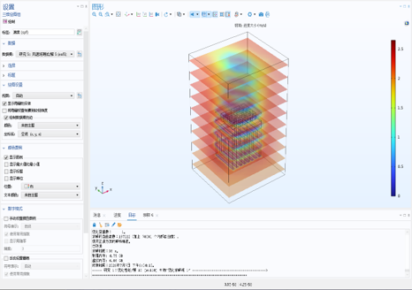
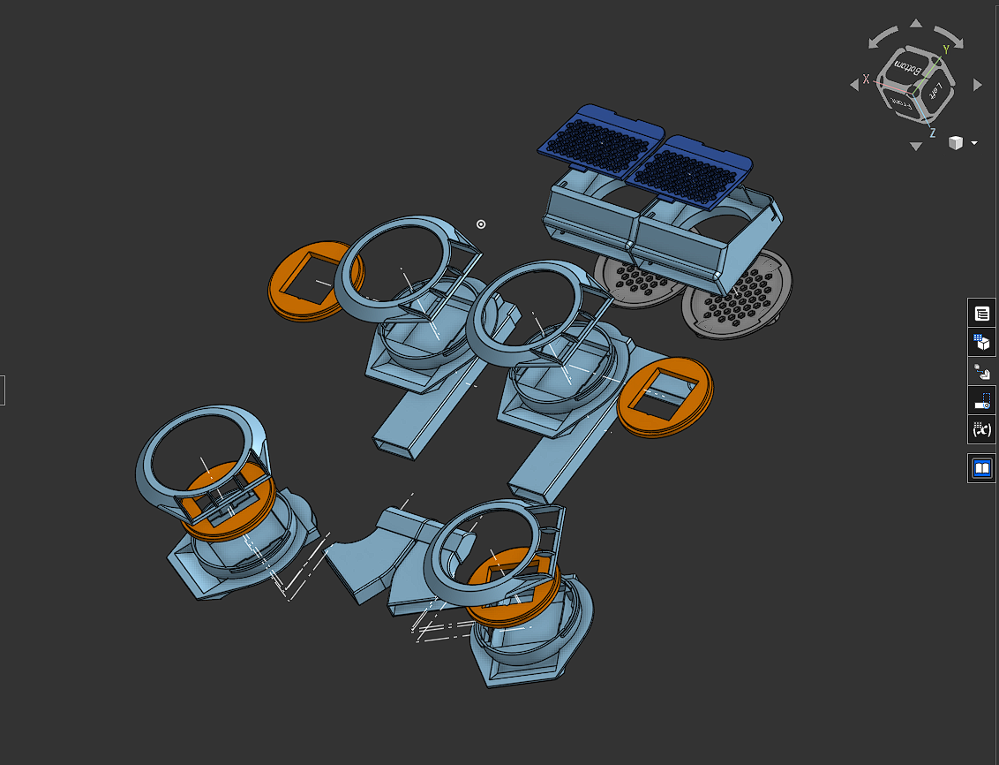

01
Edge AI & vision
Compact models and reliable inference paths for field inspection, from YOLOv5-Lite compression to Raspberry Pi deployment.
View inference evidenceSOFTWARE & DESIGN LAB
I build the models, control paths, simulation tools and product interfaces that turn sensing hardware into a usable system.
01 · CAPABILITY TRACKS
The work is organized around engineering outcomes: inference, autonomy, control and fast iteration.
Compact models and reliable inference paths for field inspection, from YOLOv5-Lite compression to Raspberry Pi deployment.
View inference evidenceROS nodes, EKF alignment, 3D SLAM, local planning and telemetry paths that connect autonomous decisions to real actuators.
View ROS architectureLSTM+CNN time-series workflows with windowing, normalization, residual analysis and forecast-aware feed-forward control.
View tuning dashboardScienceRAG, MiroFish, Hermes and Codex support structured research, scenario analysis, rapid prototyping and debugging.
Read technical map02 · SCIENTIFIC AI
The internship work combines multiphysics assumptions, finite elements and learned surrogates into a faster TEC design loop.
COMSOL and Fluent workflows cover electromagnetic, electric-potential, electrothermal and CFD/TEC cases.
FEniCS finite-element models provide the trusted baseline for geometry, materials, sources and boundary conditions.
Reduced-order models, latent spaces, PINN and PINO surrogates shorten parameter sweeps and design iteration.


03 · PRODUCT & SYSTEM DESIGN
Mechanical layout, interface hierarchy and visual communication are treated as part of the engineering system.

3D assembly modelling balances component placement, airflow packaging, thermal constraints and manufacturable enclosure decisions.
The interface between technical evidence and a product scenario makes the system legible to users and stakeholders.

Telemetry, prediction residuals and control state become visible decisions instead of hidden logs.